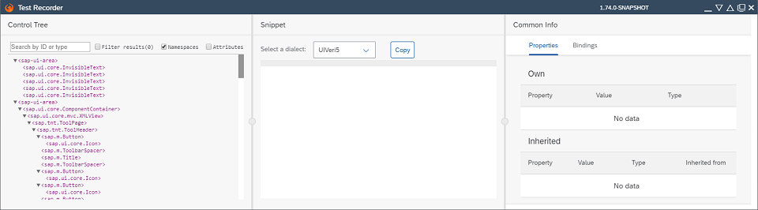

What's New in OpenUI5 1.74
With this release OpenUI5 is upgraded from version 1.73 to 1.74.
New Features
|
Test Recorder The Test Recorder tool is now part of the OpenUI5 framework and is available in all browsers. Use it in any OpenUI5 app to inspect the rendered user interface, view the control properties, and get hints about writing tests. The tool is aligned with the two official OpenUI5 testing tools – OPA5 and UIVeri5.

For more information, see Test Recorder. |
Improved Features
| Card Explorer We have enhanced the functionality to download samples from the Card Explorer, and now there are 3 optional file formats available: JSON, ZIP, and CARD. For more information, see Card Explorer. |
|
Navigation in Nested Components In recent releases, the capabilities to Navigate with Nested Components were enhanced significantly. In addition to the available documentation, a Sample has been added to showcase some fundamental possibilities of using components to structure applications and how to interconnect them via routing. |
|
Negative Predefined CSS Margin Classes We’ve introduced the following negative CSS margin classes to help you align controls that have their own default margins:
For more information, see Using Predefined CSS Margin Classes and the Sample. |
|
Responsive Padding Enablement We've introduced responsive paddings to the sap.m.IconTabBar, sap.m.ObjectHeader, and sap.m.TabContainer controls. For more information, see Enabling Responsive Paddings According to the Control Width. |
|
OpenUI5 OData V4 Model The new version of the OpenUI5 OData V4 model introduces the following features:
For more information, see OData V4 Model, the API Reference, and the Samples in the Demo Kit. |
Improved Controls
|
sap.m.Avatar We've added remove and reveal actions in the Avatar design-time metadata. Now, the control can be removed and revealed when using UI adaptation at runtime. For more information, see the Samples. |
| sap.m.ColorPalette We have introducted a Recent Colors section, showing the last 5 recently used colors. This feature is enabled by default, making it is easier to find and select the exact colors. For more information, see the API Reference and the Sample. |
| sap.m.DateRangeSelection We have introduced the ability to select month and year ranges. This improves the user experience when only a month or a year range has to be selected, and is defined by the displayFormat property. For more information, see the API Reference and the Sample. |
|
sap.m.List, sap.m.Table, sap.m.Tree The busy indicator is now displayed in the center of the visible area of the UIs of these controls and is no longer vertically centered and therefore not always visible. For more information, see the Sample. |
|
sap.m.NavContainer In version 1.69, the default value for the defaultTransitionName property was visually updated to behave as a slide & fade animation and the classic slide animation was no longer an option. Now, we've added the previous slide behavior as a new type of transition. To use it, set the defaultTransitionName property to baseSlide. For more information, see the API Reference and the Sample. |
| sap.m.NotificationListItem The avatar background color can now be managed by the application developer using the new authorAvatarColor property. Now, if any of the authorPicture or authorInitials properties are not set, the default icon will not be displayed. For more information, see the API Reference and the Sample. |
|
sap.m.plugins.DataStateIndicator This plugin for the table controls (sap.m.List, sap.m.Table, sap.ui.table.Table) allows you to implement binding-related messages and show them on the UI using a message strip. For more information, see the API Reference |
|
sap.m.Select With the new required property, you can now indicate whether user input is required. This property is helpful for accessibility purposes when a single relationship between the field and a label can't be established, for example, when one label exists for multiple fields. For more information, see the API Reference. |
|
sap.m.StandardListItem The new infoStateInverted property changes the rendering behavior of the information state and information text. If it is set to true, the color defined by the infoState property is then shown as the background color of the information text. For more information, see the API Reference and the Sample. |
|
sap.m.Table A more comprehensive message text is now shown if no data is available because all table columns are hidden. For more information, see the Sample. |
| sap.m.ViewSettingsDialog We have introduced a new button to display only the selected items in the filter tab, and to hide items that are not selected. This button works in combination with the Search field, so the displayed items are both filtered by title and selection. For more information, see the API Reference and the Sample. |
|
sap.m.Wizard We have enhanced the sap.m.Wizard control for better integration in the sap.f.DynamicPage. In order to make use of it, you need to make certain configurations. For more information, see the API Reference. |
| sap.tnt.InfoLabel We have introduced the option to add an icon to the sap.tnt.InfoLabel content. It is defined by the new icon property. For more information, see the API Reference and the Sample. |
sap.ui.integration.widgets.Card
|
|
sap.uxap.ObjectPageLayout You can now move the corresponding section numbers that are displayed in the AnchorBar when using UI adaptation at runtime. For more information, see the Samples. |
Documentation
|
Performance Checklist Ensuring that your OpenUI5 apps run fast is an important topic in application development. To support you in this task, we have improved the existing performance-related documentation as well as added some new information. Please use the comprehensive Performance Checklist as a starting point for best practices to help you to review and speed up your OpenUI5 apps. |